B <- 1000
x <- rgamma(B, 8)
mu_hat <- cumsum(x) / 1:B
sigma_hat <- sd(x)
mu_hat[B] # Theoretical: 8[1] 8.096sigma_hat # Theoretical: sqrt(8)[1] 2.862General class of methods for estimating integrals and means.
Rejection sampling is a type of Monte Carlo method.
. . .
Focus on integrating functions and estimating means.
Useful when we cannot analytically compute the integral.
It is also a variance reduction technique.
Use random sampling to obtain numerical results.
Useful when analytical solutions are infeasible.
. . .
With \(X_1, \ldots, X_N\) i.i.d. with density \(f\) and \(\operatorname{E}|h(X_1)| < \infty\), \[ \hat{\mu}_{\mathrm{MC}} = \frac{1}{N} \sum_{i=1}^N h(X_i) \rightarrow \mu = \operatorname{E}h(X_1) = \int h(x) f(x) \ \mathrm{d}x \] for \(N \to \infty\) by the law of large numbers (LLN).
If \(\sigma^2_{\mathrm{MC}} < \infty\), the central limit theorem (CLT) gives \[ \frac{1}{N} \sum_{i=1}^N h(X_i) \overset{\mathrm{approx}} \sim \mathcal{N}(\mu, \sigma^2_{\mathrm{MC}} / N) \] where \[ \sigma^2_{\mathrm{MC}} = \V h(X_1) = \int (h(x) - \mu)^2 f(x) \ \mathrm{d}x. \]
. . .
We can estimate \(\sigma^2_{\mathrm{MC}}\) using the empirical variance \[ \hat{\sigma}^2_{\mathrm{MC}} = \frac{1}{N - 1} \sum_{i=1}^N (h(X_i) - \hat{\mu}_{\mathrm{MC}})^2, \] then the variance of \(\hat{\mu}_{\mathrm{MC}}\) is estimated as \(\hat{\sigma}^2_{\mathrm{MC}} / N\) and an approximate 95% confidence interval for \(\mu\) is \[ \hat{\mu}_{\mathrm{MC}} \pm 1.96 \frac{\hat{\sigma}_{\mathrm{MC}}}{\sqrt{N}}. \]
We want to estimate the mean of a \(\mathrm{Gamma}(8,1)\) distribution.
. . .
B <- 1000
x <- rgamma(B, 8)
mu_hat <- cumsum(x) / 1:B
sigma_hat <- sd(x)
mu_hat[B] # Theoretical: 8[1] 8.096sigma_hat # Theoretical: sqrt(8)[1] 2.862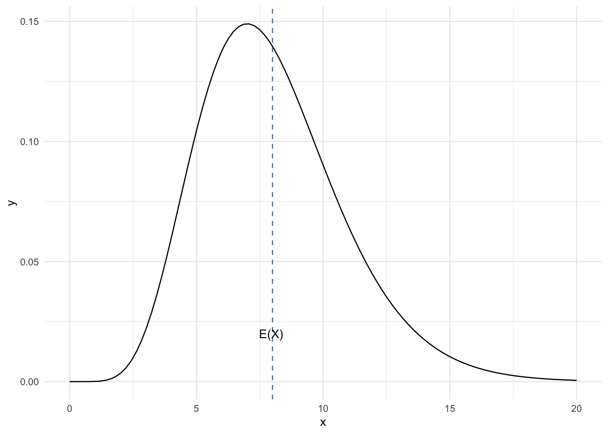
Coordinate system already present.
ℹ Adding new coordinate system, which will replace the
existing one.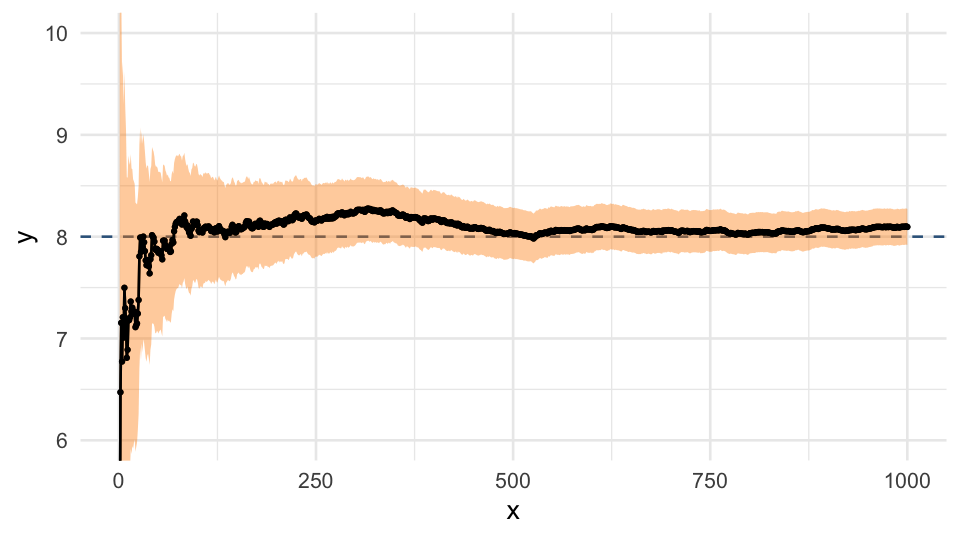
Monte Carlo standard errors decrease as \(1 / \sqrt{N}\): halving the error requires four times as many samples.
Use a pilot run to estimate the variance and plan a with a fixed sample size: \[ N \approx \left( \frac{1.96\,\hat{\sigma}_{\mathrm{pilot}}}{\varepsilon} \right)^2. \]
. . .
This targets a 95% confidence-interval half-width of \(\varepsilon\).
When we are only interested in Monte Carlo integration, we do not need to sample from the target distribution.
. . .
Some regions of the target distribution are often more important than others.
So let’s these regions, but correct for this by the samples.
We want to find \(\mu = \operatorname{E}h(X)\). Observe that \[ \mu = \int h(x) f(x) \ \mathrm{d}x = \int h(x) \frac{f(x)}{g(x)} g(x) \ \mathrm{d}x = \int h(x) w^*(x) g(x) \ \mathrm{d}x \] whenever \(g\) is a density satisfying \[ g(x) = 0 \Rightarrow f(x) = 0. \]
With \(X_1, \ldots, X_N\) i.i.d. with density \(g\), define the weights \[ w^*(X_i) = \frac{f(X_i)}{g(X_i)}. \]
. . .
\(g\) is the importance density and \(f/g\) is called the likelihood ratio.
. . .
\[ \hat{\mu}_{\mathrm{IS}}^* := \frac{1}{N} \sum_{i=1}^N h(X_i)w^*(X_i). \]
It has mean \(\mu\).
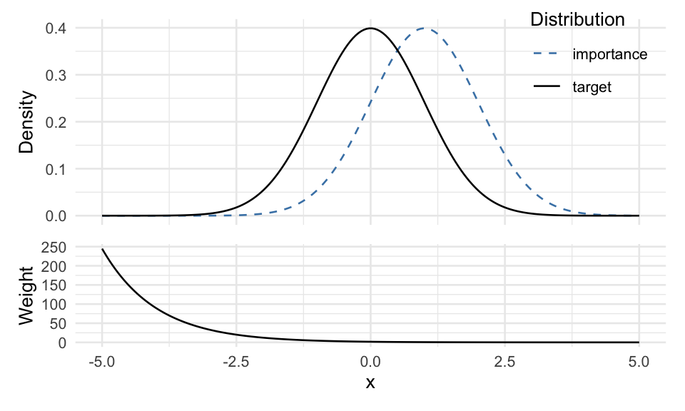
Use \(X = 10 + 3T\), where \(T \sim t_3\). This proposal has heavier tails than the Gamma target.
B <- 1000
t <- rt(B, df = 3)
x <- 10 + 3 * t
g_x <- dt(t, df = 3) / 3
w_star <- dgamma(x, 8) / g_x
cum_mean <- cumsum(x * w_star)
mu_hat_IS <- cum_mean / (1:B)
mu_hat_IS[B][1] 7.946Close to the theoretical value (8).
. . .
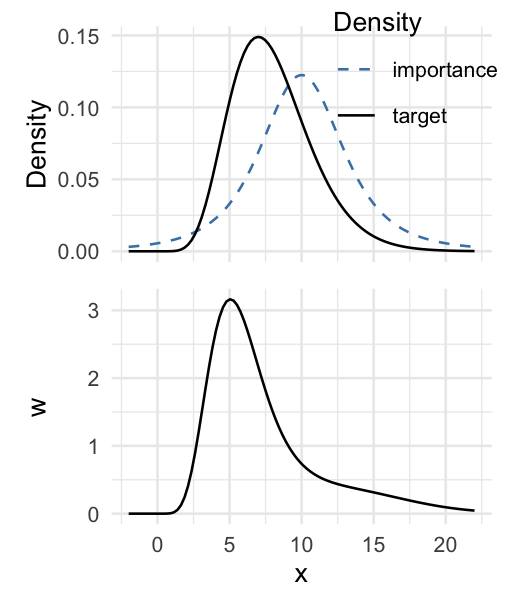
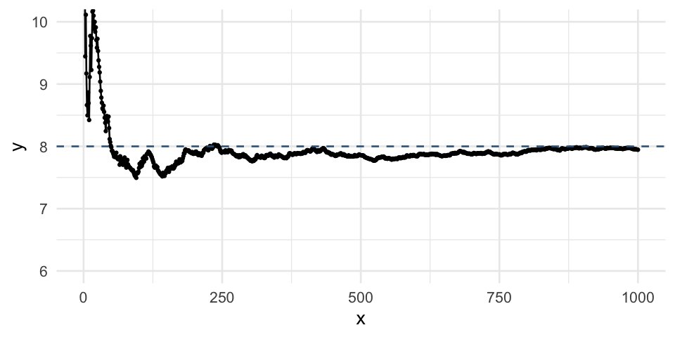
Again by the LLN, assuming \(\operatorname{E}_f|h(X)| < \infty\), \[ \hat{\mu}_{\mathrm{IS}}^* \rightarrow \operatorname{E}h(X_1) w^*(X_1) = \mu \quad \text{as } N \to \infty.\pause \] If \(\sigma^{*2}_{\mathrm{IS}} < \infty\), the CLT gives \[ \hat{\mu}_{\mathrm{IS}}^* \overset{\mathrm{approx}} \sim \mathcal{N}(\mu, \sigma^{*2}_{\mathrm{IS}} / N) \] where \[ \sigma^{*2}_{\mathrm{IS}} = \V \big( h(X_1)w^*(X_1)\big) = \int (h(x) w^*(x) - \mu)^2 g(x) \ \mathrm{d}x. \]
The IS variance can be estimated analogously to the MC variance, \[ \hat{\sigma}^{*2}_{\mathrm{IS}} = \frac{1}{N - 1} \sum_{i=1}^N (h(X_i)w^*(X_i) - \hat{\mu}_{\mathrm{IS}}^*)^2. \]
. . .
An approximate 95% confidence interval is \[ \hat{\mu}^*_{\mathrm{IS}} \pm 1.96 \frac{\hat{\sigma}^*_{\mathrm{IS}}}{\sqrt{N}}. \]
We may have \(\sigma^{*2}_{\mathrm{IS}} > \sigma^2_{\mathrm{MC}}\) or \(\sigma^{*2}_{\mathrm{IS}} < \sigma^2_{\mathrm{MC}}\) depending on \(h\) and \(g\).
. . .
Choose \(g\) so that \(|h(x)| w^*(x)\) becomes as constant as possible.
sigma_hat_IS <- sd(x * w_star)
sigma_hat_IS[1] 4.216. . .
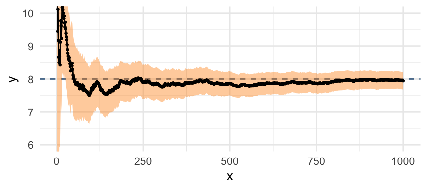
Suppose we want to estimate \[ \operatorname{E}(X^4) = \int x^4 f(x) \ \mathrm{d}x = 3 \] where \(f(x)\) is the standard normal density.
Direct Monte Carlo samples from \(f\), placing most draws near zero.
The \(x^4f(x)\) peaks at \(x = \pm2\) and decays to zero in the far tails. We want more draws around those peaks.
Try a wider Gaussian: \(g = \mathcal{N}(0,4)\), with standard deviation \(2\). This puts more mass near \(\pm2\) and reduces the variance of \(X^4f(X)/g(X)\).
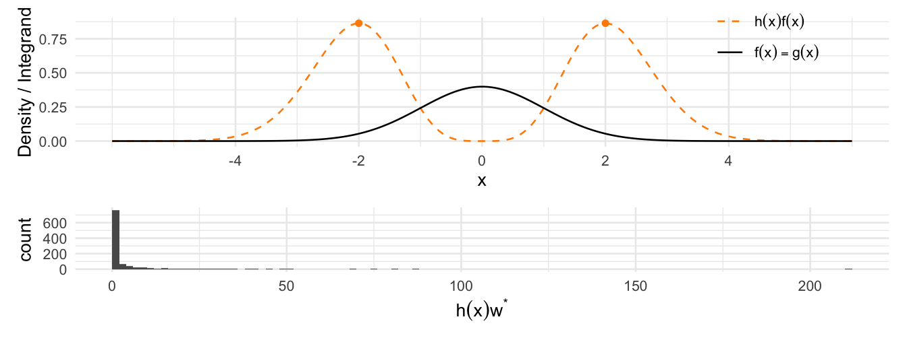
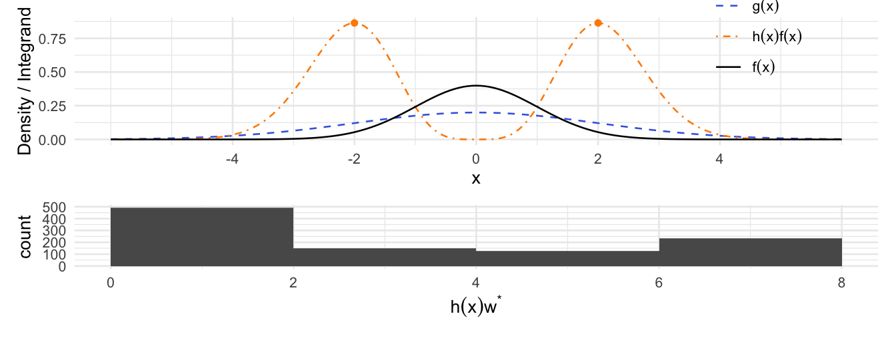
. . .
For the same \(N\), the estimator variances are \[ \V(\hat\mu_{\mathrm{MC}}) = \frac{96}{N}, \qquad \V(\hat\mu_{\mathrm{IS}}^*) \approx \frac{7.93}{N}. \]
For \(0 < \operatorname{E}_f|h(X)| < \infty\), the variance-minimizing density for ordinary IS is \[ g_{\mathrm{opt}}(x) = \frac{|h(x)|f(x)}{\int |h(u)|f(u)\,\mathrm{d}u}. \]
. . .
If \(h \geq 0\), then \(g_{\mathrm{opt}} = hf / \mu\). Every draw gives \[ \frac{h(X)f(X)}{g_{\mathrm{opt}}(X)} = \mu, \qquad X \sim g_{\mathrm{opt}}, \] so the estimator has .
But evaluating these weights requires the normalizing constant \(\mu\), the integral we want. Use the shape of \(|h|f\) to guide a practical proposal.
If \(f = c^{-1} q\) with \(c\) unknown1 then \[ c = \int q(x) \ \mathrm{d}x = \int \frac{q(x)}{g(x)} g(x) \ \mathrm{d}x. \]
. . .
And \[ \mu = \frac{\int h(x) w^*(x) g(x) \ \mathrm{d}x}{\int w^*(x) g(x) \ \mathrm{d}x}, \] where \[ w^*(x) = \frac{q(x)}{g(x)}. \]
An importance sampling estimate of \(\mu\) is thus \[ \hat{\mu}_{\mathrm{IS}} = \frac{\sum_{i=1}^N h(X_i) w^*(X_i)}{\sum_{i=1}^N w^*(X_i)} \pause = \sum_{i=1}^N h(X_i) w(X_i), \] where \(w^*(X_i) = q(X_i) / g(X_i)\) and \[ w(X_i) = \frac{w^*(X_i)}{\sum_{i=1}^N w^*(X_i)} \] are the normalized weights.
This works regardless of the normalizing constant \(c\), and also if an unnormalized proposal density is used in the weights.
The estimator is generally biased for finite \(N\), but is consistent under the support and integrability assumptions.
Ignore the normalizing constants of the Gamma target and proposal \(10 + 3T\), \(T \sim t_3\). Set \(w^*(x) = 0\) for \(x \leq 0\), and otherwise use \[ w^*(x) = x^7 e^{-x} \left( 1 + \frac{(x - 10)^2}{27} \right)^2. \]
. . .
B <- 1000
x <- 10 + 3 * rt(B, df = 3)
w_star <- numeric(B)
x_pos <- x[x > 0]
w_star[x > 0] <- exp(
2 * log1p((x_pos - 10)^2 / 27) - x_pos + 7 * log(x_pos)
)
mu_hat_IS <- cumsum(x * w_star) / cumsum(w_star)
mu_hat_IS[B] # Theoretical value 8[1] 8.124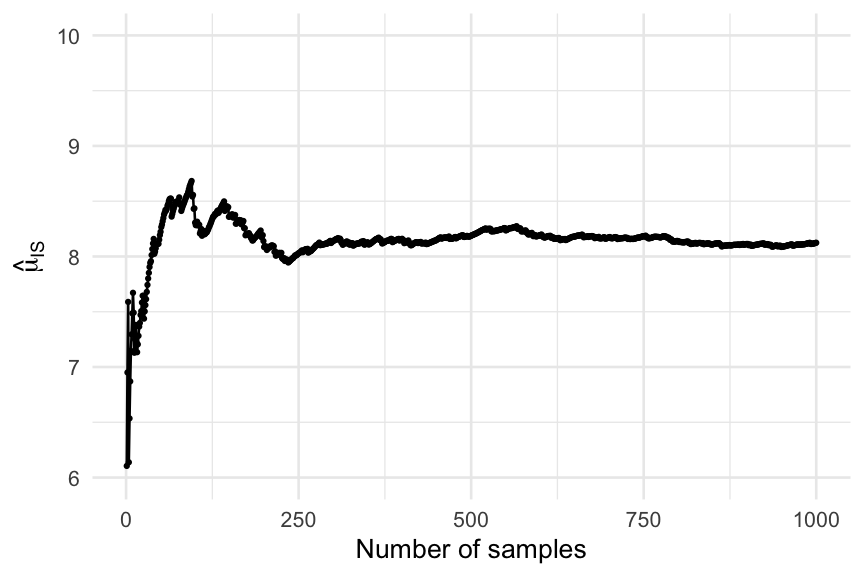
Let \(w_i = w(X_i)\) be the normalized weights. If \(w^*(X)\) and \(h(X)w^*(X)\) have finite variances, the \(\Delta\)-method gives the standard error estimate \[ \widehat{\mathrm{se}}(\hat{\mu}_{\mathrm{IS}}) = \sqrt{\frac{N}{N - 1} \sum_{i=1}^N w_i^2 \big(h(X_i) - \hat{\mu}_{\mathrm{IS}}\big)^2}. \]
This accounts for uncertainty in both the weighted sum and the sum of weights.
An approximate 95% confidence interval is \[ \hat{\mu}_{\mathrm{IS}} \pm 1.96\,\widehat{\mathrm{se}}(\hat{\mu}_{\mathrm{IS}}). \]
Normalizing constants cancel.
w <- w_star / sum(w_star)
weighted_residuals <- w * (x - mu_hat_IS[B])
se_hat_IS <- sqrt(B / (B - 1) * sum(weighted_residuals^2))
se_hat_IS[1] 0.1025. . .
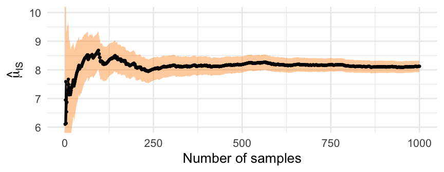
Estimating probabilities or expectations involving rare events.
. . .
Importance sampling can reduce variance by focusing samples where the integrand is large.
. . .
When direct sampling from the target distribution is hard, but sampling from a related importance distribution is easy.
If the importance distribution assigns little mass to important regions, weighted contributions can be highly variable and estimates unreliable.
More samples may help with poor overlap. They cannot repair missing support: if \(g = 0\) where \(hf \neq 0\), ordinary IS misses part of the integral.
Redesign the importance density to cover the required support and put more mass where the integrand is large. Self-normalized IS must cover the target support, including where \(h = 0\).
Plot the weights and weighted integrand values to identify extreme contributions.
. . .
ESS summarizes weight concentration. A high ESS cannot rule out missed regions.
. . .
CV quantifies the relative variability of the weights.
. . .
Comparing with standard Monte Carlo shows whether importance sampling actually improves efficiency.
Suppose that \[ X \sim \mathcal{N}(0, I_{2}) \] and that we want to estimate \(\operatorname{E}(h(X))\) where \(h(X)\) is large near the origin.
If we use an importance density \(g(x)\) from \[ \mathcal{N}(\mu, I_{2}) \] with large \(\|\mu\|\), most samples are far from the origin, so \(h(X)\) is nearly zero and weights are highly variable.
Warning: package 'mvtnorm' was built under R version 4.6.1`stat_bin()` using `bins = 30`. Pick better value
`binwidth`.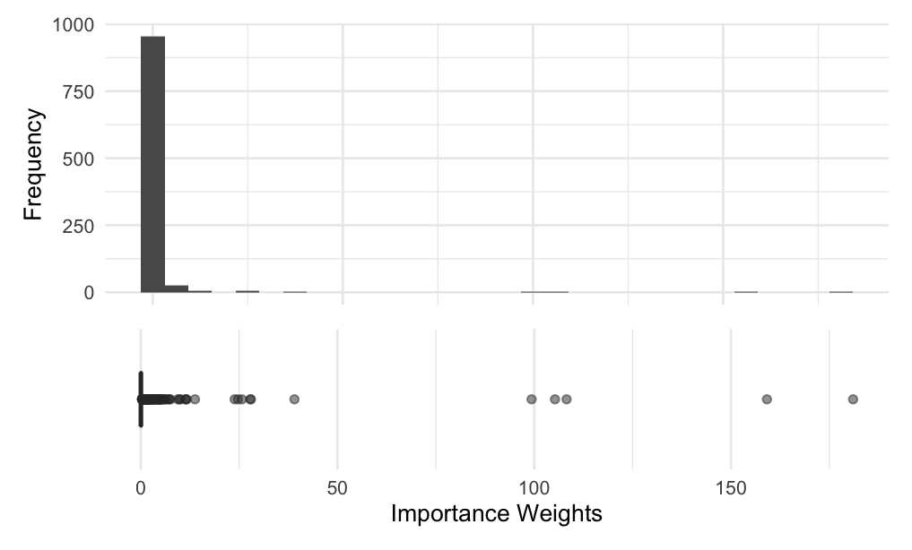
The weight-based effective sample size (ESS) summarizes how evenly the total weight is distributed across samples: \[ \mathrm{ESS} = \frac{1}{\sum_{i=1}^N w_i^2} = \frac{\left( \sum_{i=1}^N w^*_i \right)^2}{\sum_{i=1}^N ({w^*_i})^2} \] where \(w_i\) are the importance weights.
If all weights are equal, \(\mathrm{ESS} = N\). If one weight dominates, \(\mathrm{ESS} \approx 1\), which warns of possible instability.
. . .
For the bivariate example, with get an ESS of about 14 out of \(N = 1000\) samples.
The coefficient of variation (CV) of the weights measures their relative variability.
It is defined as \[ \mathrm{CV} = \frac{\sqrt{\frac{1}{N} \sum_{i=1}^N (w_i - \bar{w})^2}}{\bar{w}} \] where \(\bar{w} = \frac{1}{N} \sum_{i=1}^N w_i\) is the mean weight.
. . .
A high CV indicates uneven weights, which can make estimates unstable.
CV near 0 means nearly uniform weights. Even CV below 1 (\(\mathrm{ESS} > N/2\)) does not guarantee accuracy: the integrand matters, and samples can miss important regions.
. . .
There is a direct relationship between ESS and CV: \[ \mathrm{ESS} = \frac{N}{1 + \mathrm{CV}^2}. \]
We want low-variance estimates of \[ I = \int h(x) f(x) \ \mathrm{d}x \]
. . .
The importance distribution determines the weights \[ w^*(x) = \frac{f(x)}{g(x)} \] but ordinary IS variance depends on \(h(X)w^*(X)\), not just the weights. For self-normalized IS, the asymptotic variance depends on \((h(X) - \mu)w^*(X)\).
Require \(g(x) > 0\) wherever \(|h(x)|f(x) > 0\) for ordinary IS, and wherever \(f(x) > 0\) for self-normalized IS, up to sets of measure zero.
. . .
For ordinary IS, put more mass where \(|h(x)|f(x)\) is large. For self-normalized IS, the corresponding quantity is \(|h(x) - \mu|f(x)\).
. . .
Use tails heavy enough that the weighted contributions have finite variance. Heavier tails than the target are often a useful safeguard.
Multiply the target density by an exponential factor to favor a rare-event region.
. . .
Use a Gaussian approximation centered at the mode of the target distribution.
. . .
Iteratively refine the importance distribution based on pilot runs.
. . .
Combine components to capture multiple modes. A defensive component covers the support and controls the tails of the weighted contributions.
For \(Z \sim \mathcal{N}(0,1)\), estimate \[ p = P(Z > 4) \approx 3.17 \times 10^{-5}. \]
n_rare <- 10000
rare_hits <- rnorm(n_rare) > 4
mean(rare_hits)[1] 0. . .
This is typical: with \(N = 10{,}000\), \[ P(\text{no exceedances}) = (1 - p)^N \approx 0.729. \]
The empirical standard error is also zero. We have missed the event, not established that its probability is zero.
For the standard normal density \(f = \phi\), an shifts the mean: \[ g_\theta(x) = e^{\theta x-\theta^2 / 2} f(x) = \phi(x - \theta). \]
Choose \(\theta = 4\): \(X_i \sim \mathcal{N}(4,1)\) and \(w^*(x) = f(x) / g_4(x) = e^{8-4x}\).
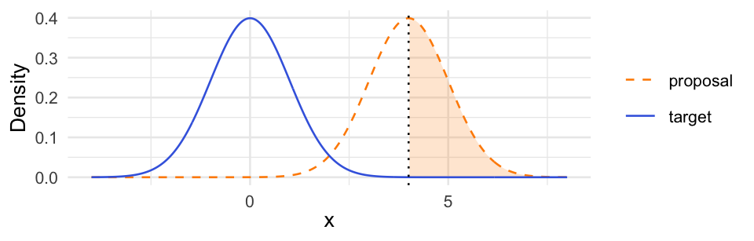
. . .
\[ \hat{p}_{\mathrm{IS}} = \frac{1}{N} \sum_{i=1}^N \mathbf{1}\{X_i > 4\}\,e^{8-4X_i}. \]
500 independent runs per method, with \(N = 10{,}000\) draws per run.
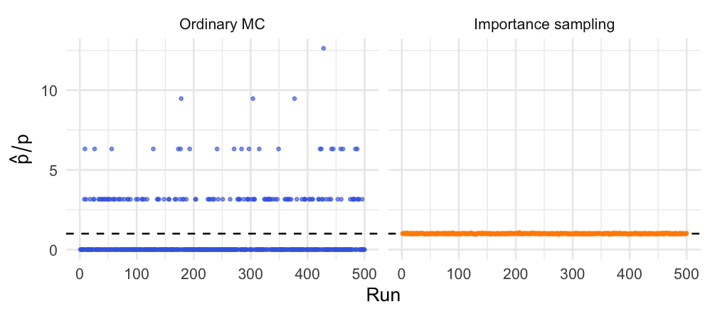
The dashed line is the truth. MC returned zero in 73.2% of runs.
IS had about 91 times smaller empirical standard deviation at the same sample size.
Take a Gaussian approximation of the target density at its mode \(x^*\) as the importance distribution.
. . .
The connection comes from the second-order Taylor expansion of \(\log f(x)\) at an interior mode \(x^*\), \[ \log f(x) \approx \log f(x^*) - \frac{1}{2}(x - x^*)^T \Lambda (x - x^*) \] where \(\Lambda\) is the Hessian of \(-\log f(x)\) at \(x^*\), assumed positive definite.
Exponentiating both sides gives: \[ f(x) \approx f(x^*) \exp\left( -\frac{1}{2}(x - x^*)^T \Lambda (x - x^*) \right) \]
. . .
Useful for smooth targets with an approximately Gaussian shape near the mode. Check the tails before using it for importance sampling.
The density of the \(\mathrm{Gamma}(3,1)\) distribution is \[ f(x) = \frac{1}{2} x^2 e^{-x}, \quad x > 0. \]
. . .
The mode is at \(x^* = 2\) and the Hessian of \(-\log f(x)\) at \(x^*\) is \[ \Lambda = \frac{\alpha - 1}{(x^*)^2} = \frac 1 2. \]
So the Laplace approximation is \(\mathcal{N}(2, 2)\), with standard deviation \(\sqrt{2}\).
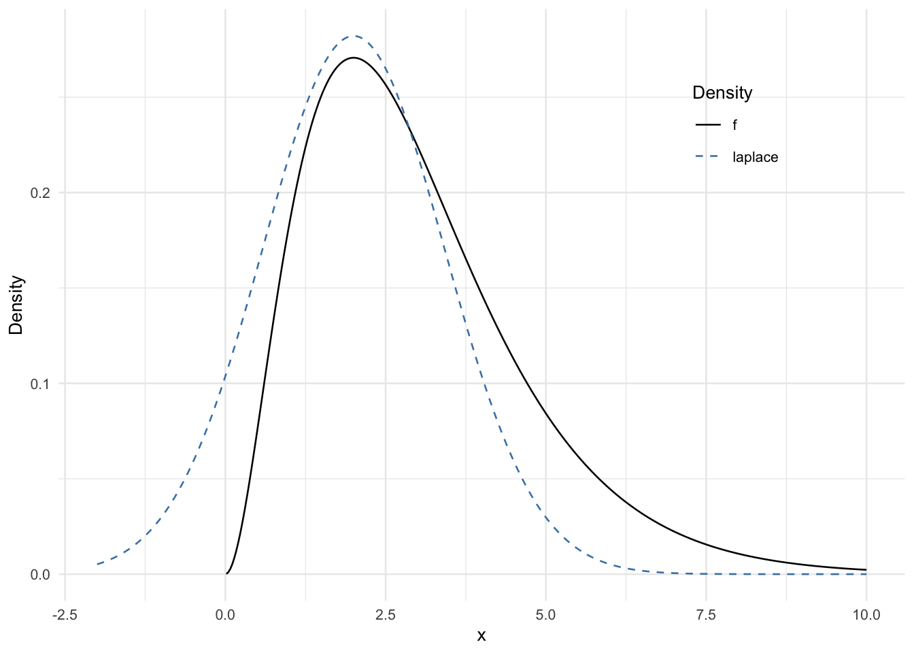
Adaptive importance sampling iteratively refines the importance distribution based on the samples obtained.
. . .
Start with an initial importance distribution and refine it based on samples and weights.
. . .
One simple adaptive strategy is to use moment-matching to update a Gaussian importance distribution.
At iteration \(n\), draw samples \(x_1, \ldots, x_N \sim g_n(x)\) and compute weights \[ w_i^* = \frac{f(x_i)}{g_n(x_i)}. \]
. . .
Then update the importance distribution parameters as \[ \begin{aligned} \mu_{n + 1} &= \frac{\sum_{i=1}^N w_i^* x_i}{\sum_{i=1}^N w_i^*},\\ \sigma^2_{n + 1} &= \frac{\sum_{i=1}^N w_i^* (x_i - \mu_{n + 1})^2}{\sum_{i=1}^N w_i^*}. \end{aligned} \]
Return to the \(\mathrm{Gamma}(3,1)\) target and estimating \(\operatorname{E}_f[X] = 3\). The Laplace proposal \(g_L = \mathcal{N}(2,2)\) has a right tail that is too light: ordinary IS has .
Add a heavy-tailed component \(g_t\), the density of \(2 + \sqrt{2}T\) with \(T \sim t_3\): \[ g_{\mathrm{mix}}(x) = 0.9 g_L(x) + 0.1 g_t(x). \]
. . .
Since \(g_{\mathrm{mix}} \geq 0.1g_t\), the mixture inherits protection from the Student-\(t\) tails. For this Gamma mean, it restores .
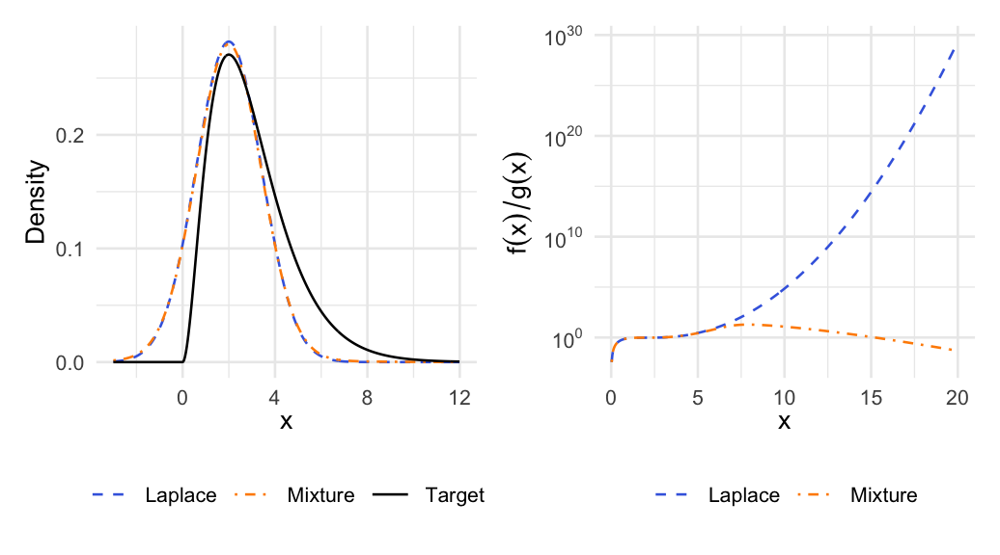
Estimate the arithmetic mean of the von Mises distribution on \([-\pi,\pi]\) with \(\mu = 0\) and \(\kappa = 2\). Plot convergence toward \(\operatorname{E}X = 0\).
dvmises <- function(x, mu = 0, kappa = 2) {
ifelse(
abs(x) <= pi,
exp(kappa * cos(x - mu)) / (2 * pi * besselI(kappa, 0)),
0
)
}. . .
Compute the estimate of the mean and its standard error.
. . .
Compute the effective sample size and coefficient of variation of the importance weights. Experiment with different importance densities to see if you find a better one.
The density is symmetric about zero, so \(x f(x)\) is odd and \(\operatorname{E}X = \int_{-\pi}^{\pi} x f(x)\,\mathrm{d}x = 0\). Use the proposal \(g = \mathcal{N}(0,(\pi/2)^2)\) and ordinary IS: \[ \hat\mu_n = \frac{1}{n}\sum_{i=1}^n X_i w_i^*, \qquad w_i^* = \frac{f(X_i)}{g(X_i)}. \] The target density is normalized, so there is no need to divide by the sum of weights. Draws outside \([-\pi,\pi]\) receive zero weight and remain in the sample of size \(n\).
set.seed(2026)
vm_N <- 10000
vm_x <- rnorm(vm_N, sd = pi / 2)
vm_weights <- dvmises(vm_x) / dnorm(vm_x, sd = pi / 2)
vm_values <- vm_x * vm_weights
vm_running_mean <- cumsum(vm_values) / seq_len(vm_N)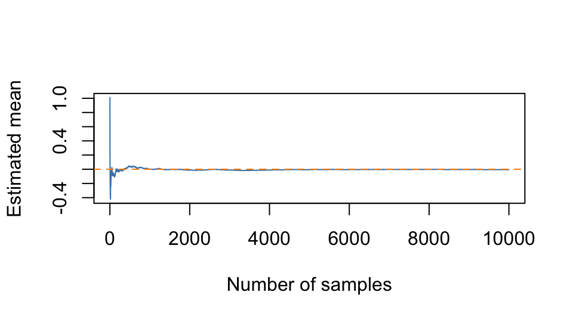
The running estimate approaches zero by the law of large numbers; its path need not be monotone.
Set \(Y_i = X_i w_i^*\). The estimate is the sample mean of the \(Y_i\), so \[ \widehat{\mathrm{se}}(\hat\mu_N) = \frac{s_Y}{\sqrt{N}}, \qquad s_Y^2 = \frac{1}{N-1}\sum_{i=1}^N(Y_i-\hat\mu_N)^2. \] Use the standard deviation of the weighted contributions, not the sampled \(X_i\) or the weights alone.
vm_estimate <- mean(vm_values)
vm_se <- sd(vm_values) / sqrt(vm_N)
c(
estimate = vm_estimate,
standard_error = vm_se,
lower_95 = vm_estimate - 1.96 * vm_se,
upper_95 = vm_estimate + 1.96 * vm_se
) estimate standard_error lower_95 upper_95
-0.005544 0.007253 -0.019759 0.008672 Using unnormalized weights, calculate \[
\mathrm{ESS} = \frac{(\sum_i w_i^*)^2}{\sum_i (w_i^*)^2},
\qquad
\mathrm{CV} = \frac{\sqrt{N^{-1}\sum_i(w_i^*-\bar w^*)^2}}{\bar w^*}.
\] The CV uses divisor \(N\), as in the lecture; R’s sd() uses \(N-1\).
vm_diagnostics <- function(x, weights) {
n <- length(x)
data.frame(
estimate = mean(x * weights),
SE = sd(x * weights) / sqrt(n),
ESS = sum(weights)^2 / sum(weights^2),
CV = sqrt(mean((weights - mean(weights))^2)) / mean(weights)
)
}
vm_baseline <- vm_diagnostics(vm_x, vm_weights)
vm_baseline estimate SE ESS CV
1 -0.005544 0.007253 6876 0.674Try normal proposals with standard deviations \(1\) and \(1.3\), which concentrate more draws near the target’s mode, and \(\mathrm{Uniform}(-\pi,\pi)\), which covers exactly its support. All four proposals are positive throughout the target’s support.
set.seed(2027)
vm_x_normal <- rnorm(vm_N, sd = 1)
vm_w_normal <- dvmises(vm_x_normal) / dnorm(vm_x_normal)
vm_x_uniform <- runif(vm_N, -pi, pi)
vm_w_uniform <- dvmises(vm_x_uniform) /
dunif(vm_x_uniform, -pi, pi)
vm_x_middle <- rnorm(vm_N, sd = 1.3)
vm_w_middle <- dvmises(vm_x_middle) / dnorm(vm_x_middle, sd = 1.3)
vm_comparison <- rbind(
vm_baseline,
vm_diagnostics(vm_x_normal, vm_w_normal),
vm_diagnostics(vm_x_middle, vm_w_middle),
vm_diagnostics(vm_x_uniform, vm_w_uniform)
)
vm_comparison <- data.frame(
proposal = c(
"Normal, sd = pi/2", "Normal, sd = 1",
"Normal, sd = 1.3", "Uniform(-pi, pi)"
),
vm_comparison
)
knitr::kable(vm_comparison, digits = c(0, 5, 5, 0, 3), row.names = FALSE)| proposal | estimate | SE | ESS | CV |
|---|---|---|---|---|
| Normal, sd = pi/2 | -0.00554 | 0.00725 | 6876 | 0.674 |
| Normal, sd = 1 | -0.00261 | 0.00856 | 9372 | 0.259 |
| Normal, sd = 1.3 | -0.00101 | 0.00720 | 7972 | 0.504 |
| Uniform(-pi, pi) | 0.00950 | 0.00802 | 4582 | 1.087 |
At the same sample size, the smallest estimated standard error in this run is obtained with Normal, sd = 1.3. Compare standard errors to judge precision for this particular mean; proximity of one estimate to zero can be luck.
Higher ESS and lower CV indicate more even weights, but do not necessarily give a smaller standard error: that also depends on the integrand \(h(x)=x\). For ordinary IS the ideal proposal is proportional to \(|x|f(x)\), rather than just \(f(x)\). Thus concentrating too tightly around zero can miss useful tail contributions. These diagnostics are empirical, so repeat the comparison with other seeds or larger samples before drawing strong conclusions.
Estimate integrals and means using random sampling when analytic solutions are not possible.
. . .
Focus samples where they matter most, but choose your proposal carefully to avoid large or variable weights.
. . .
Examine weights, weighted integrand values, and ESS to detect instability. These checks cannot guarantee accuracy or reveal every missed region.
. . .
It’s hard! But use adaptive and defensive methods to help fix poor coverage and improve robustness.
We introduce optimization methods for minimizing and maximizing functions.
We’ll focus on convex optimization, a special class of optimization problems that are easier to solve and have nice properties.
Computing the variance of IS with normalized weights is more complicated because the estimator is a .
Write \(c = \operatorname{E}_g[w^*(X)]\). If both \(h(X)w^*(X)\) and \(w^*(X)\) have finite variances, the multivariate CLT gives \[ \frac{1}{N} \sum_{i=1}^N \begin{bmatrix} h(X_i) w^*(X_i) \\ w^*(X_i) \end{bmatrix} \overset{\mathrm{approx}}{\sim} \mathcal{N}\left( c \begin{bmatrix} \mu \\ 1\end{bmatrix}, \frac{1}{N} \begin{bmatrix} \sigma^{2}_{\mathrm{IS}} & \gamma \\ \gamma & \sigma^2_{w^*} \end{bmatrix} \right), \] where \[ \begin{aligned} \sigma^2_{\mathrm{IS}} & = \V \big(h(X_1) w^*(X_1)\big) \\ \gamma & = \mathop{\mathrm{Cov}}(h(X_1) w^*(X_1), w^*(X_1)) \\ \sigma^2_{w^*} & = \V (w^*(X_1)) \end{aligned} \]
We can then apply the \(\Delta\)-method with \(t(x, y) = x / y\).
Observe that \(\nabla t(x, y) = \begin{bmatrix} 1 / y \\ -x / y^2 \end{bmatrix}\) , whence
\[ \nabla t(c\mu, c)^T \left(\begin{array}{cc} \sigma^{2}_{\mathrm{IS}} & \gamma \\ \gamma & \sigma^2_{w^*} \end{array} \right) \nabla t(c\mu, c) = \frac{\sigma^{2}_{\mathrm{IS}} + \mu^2 \sigma_{w^*}^2 - 2 \mu \gamma}{c^{2}}. \]
. . .
By the \(\Delta\)-method, \[ \hat{\mu}_{\mathrm{IS}} \overset{\mathrm{approx}}{\sim} \mathcal{N}\left( \mu, \frac{\sigma^{2}_{\mathrm{IS}} + \mu^2 \sigma_{w^*}^2 - 2 \mu \gamma}{c^2 N} \right). \]
. . .
Plug in empirical estimates, estimating \(c\) when it is unknown by \[ \hat{c} = \frac{1}{N} \sum_{i=1}^N w^*(X_i). \]
If both densities in the weights are unnormalized, \(c\) is the ratio of their normalizing constants.
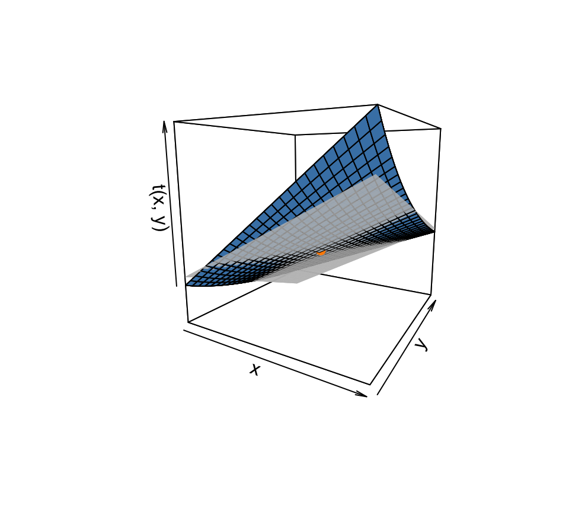
For instance common in Bayesian statistics.↩︎